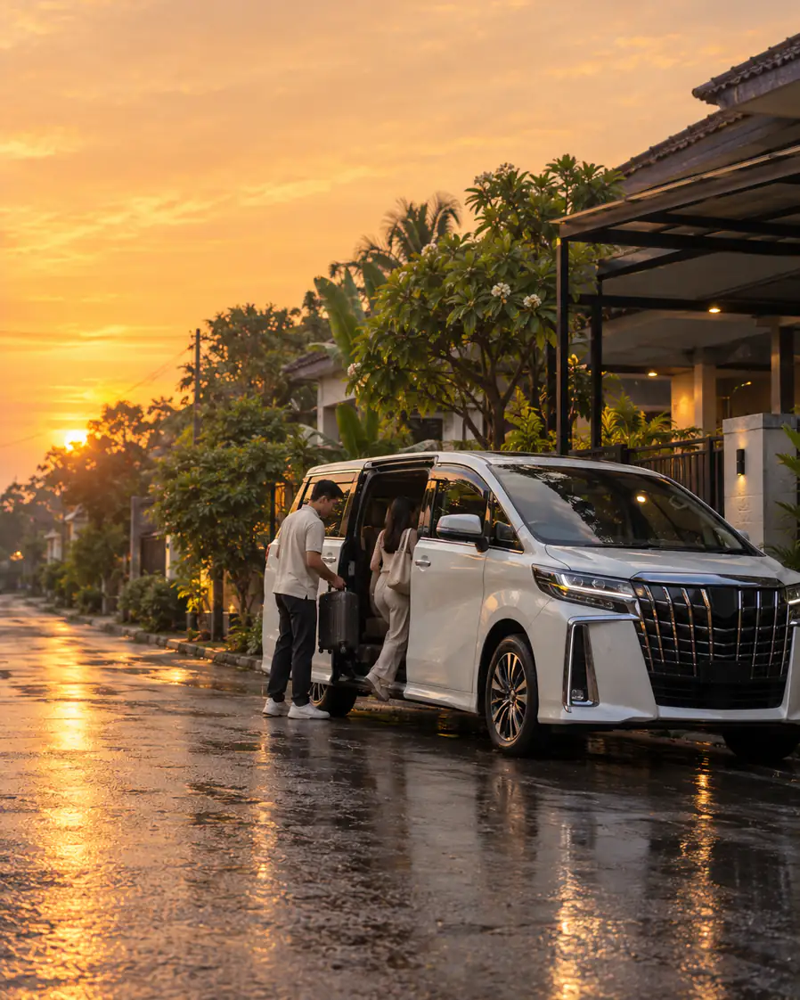
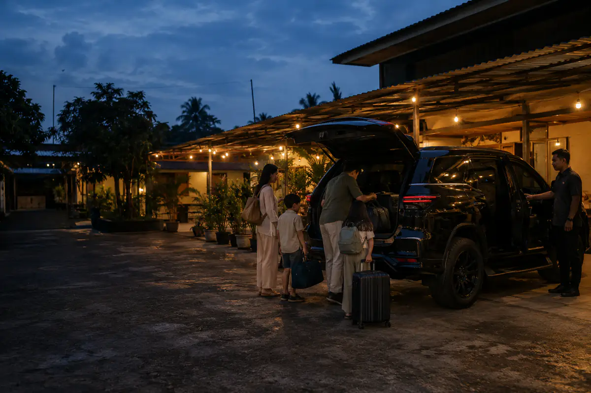

Travel antar kota premium
Antar Kota,
Antar Pintu
Dijemput di alamatmu, diantar sampai depan tujuan. Satu mobil maksimal 6 penumpang, berangkat tiap hari di 4 koridor utama Jawa.
- 24keberangkatan tiap hari
- 4,9dari 1.800+ penumpang
- 6penumpang per mobil
Rute & jadwal
Pilih Rutenya, Kami Atur Sisanya
Harga per kursi sudah termasuk jemput dan antar dalam kota. Pilih jam berangkat, lalu kursinya kami kunci lewat WhatsApp.
Telat berangkat lebih dari 30 menit, ongkosmu kami potong 50%.
-
Jakarta Bandung
3 jam 15 menit
Rp 165.000per kursi
Jam berangkat
- 05.00
- 08.00
- 11.00
- 14.00
- 17.00
- 20.00
Lewat: Bekasi, Cikampek, Padalarang
Booking kursi -
Bandung Cirebon
3 jam
Rp 145.000per kursi
Jam berangkat
- 06.00
- 10.00
- 15.00
- 19.00
Lewat: Sumedang, Majalengka, Kadipaten
Booking kursi -
Semarang Yogyakarta
2 jam 45 menit
Rp 135.000per kursi
Jam berangkat
- 06.00
- 09.00
- 13.00
- 16.00
- 19.00
Lewat: Ungaran, Salatiga, Magelang
Booking kursi -
Surabaya Malang
2 jam 30 menit
Rp 120.000per kursi
Jam berangkat
- 05.30
- 08.30
- 12.00
- 15.30
- 18.30
Lewat: Sidoarjo, Pandaan, Lawang
Booking kursi
Rute lain seperti Jakarta – Cirebon dan Yogyakarta – Solo jalan sesuai permintaan. Tanya rute lain
Kelas perjalanan
Satu Rute, Empat Cara Menikmatinya
Semua kelas dijemput dan diantar sampai alamat. Bedanya di mobil, jumlah kursi, dan ruang kakimu.
-
Paling dipilih
Reguler
Toyota Innova Reborn
- 6 penumpang, kursi 2-2-2
- 1 koper besar per orang
Harga ruteRp 120rb – 165rb
-
Bisnis
Toyota Camry
- 3 penumpang, kabin senyap
- Meja lipat, colokan tiap kursi
Tambah+ Rp 120.000
-
Eksekutif
Toyota Alphard
- 4 penumpang, captain seat
- Sandaran kaki, air mineral
Tambah+ Rp 250.000
-
Privat
Toyota Fortuner GR Sport
- Satu mobil untuk rombonganmu
- Berangkat sesuai jam yang kamu mau
MulaiRp 1,4 jt per rute
Kenapa Trayek
Yang Bikin Penumpang Balik Lagi
-
Dijemput di Alamat
Tidak perlu ke pool. Sebut titik jemput, sopir yang datang.
-
Jadwal Dipegang
Telat berangkat lebih dari 30 menit, ongkos dipotong setengah.
-
Sopir Tetap
Sopir tetap dan hafal rute, wajib istirahat tiap 3 jam jalan.
Cara booking
Tiga Langkah, Tanpa Aplikasi
Tidak perlu daftar akun dan tidak perlu bayar di muka. Semua lewat WhatsApp.
-
01
Chat admin
Sebut rute, tanggal, jumlah kursi, dan kelas yang kamu mau.
-
02
Pilih jam & titik jemput
Admin kirim sisa kursi tiap jam. Kamu pilih, lalu kirim alamat jemput.
-
03
Bayar setelah kursi aman
Transfer atau QRIS setelah kursi dikonfirmasi. Bisa juga bayar ke sopir saat dijemput.

Charter & rombongan
Satu Mobil, Seharian, Ikut Rencanamu
Untuk acara keluarga, tamu kantor, atau perjalanan yang mampir ke banyak titik. Sopir dan BBM sudah termasuk.
- 12 jam pemakaian, bisa tambah jam
- Antar kota atau keliling dalam kota
- Innova, Alphard, atau Fortuner
Kata penumpang
Cerita dari Kursi Belakang
4,9 dari 5 · 1.800+ ulasan
-
Dimas WicaksonoJakarta → Bandung
“Dijemput tepat di depan kos jam 5 pagi, sampai kantor Bandung sebelum meeting. Mobilnya bersih dan sopirnya santai bawanya.”
-
Nadia AyuSemarang → Yogyakarta
“Bawa anak umur 3 tahun, dibantuin naikin stroller tanpa diminta. Enaknya nggak usah nunggu penuh dulu baru jalan.”
-
Bayu SaputraSurabaya → Malang
“Ambil kelas Bisnis buat jalan dinas, bisa kerja di jalan karena kabinnya sepi. Bayarnya setelah kursi fix, jadi tenang.”
Pool & titik jemput
Naik dari Rumah, atau Mampir ke Pool
Jemput gratis di dalam kota. Di luar area, kita ketemu di pool terdekat atau titik yang disepakati.
-
Jakarta
Jl. Tebet Raya No. 24, Tebet, Jakarta Selatan
Jemput gratis: Jaksel, Jakpus, Jaktim, Depok
-
Bandung
Jl. Dipatiukur No. 71, Coblong, Bandung
Jemput gratis: Bandung kota, Cimahi, Dago
-
Semarang
Jl. MT Haryono No. 55, Semarang Tengah
Jemput gratis: Semarang kota, Banyumanik
-
Surabaya
Jl. Raya Darmo No. 88, Wonokromo, Surabaya
Jemput gratis: Surabaya kota, Sidoarjo utara
Pertanyaan
Yang Sering Ditanyakan
Belum ketemu jawabannya? Admin jaga WhatsApp dari jam 05.00 sampai 22.00.
Boleh bawa berapa banyak barang?
Satu koper besar dan satu tas kabin per penumpang. Kalau barangmu lebih, bilang saat booking supaya kami sisakan ruang bagasi atau sarankan ambil kursi tambahan.
Anak kecil dihitung satu kursi?
Anak di atas 3 tahun dihitung satu kursi. Di bawah itu boleh dipangku tanpa biaya, maksimal satu anak per orang dewasa. Baby seat bisa disiapkan kalau diminta sehari sebelumnya.
Rumah saya di luar area jemput, bagaimana?
Masih bisa dijemput dengan tambahan mulai Rp 50.000, tergantung jarak. Alternatifnya kita ketemu di pool atau titik kumpul terdekat yang dilewati rute.
Bayarnya kapan dan lewat apa?
Setelah admin mengonfirmasi kursi. Bisa transfer bank, QRIS, atau bayar tunai ke sopir saat dijemput. Tidak ada biaya tambahan di tengah jalan.
Kalau rencana saya berubah?
Ganti jadwal gratis sampai 6 jam sebelum berangkat, selama masih ada kursi. Pembatalan di atas 6 jam dikembalikan penuh, di bawah itu dipotong 50%.